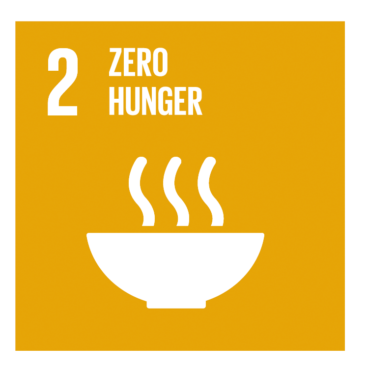
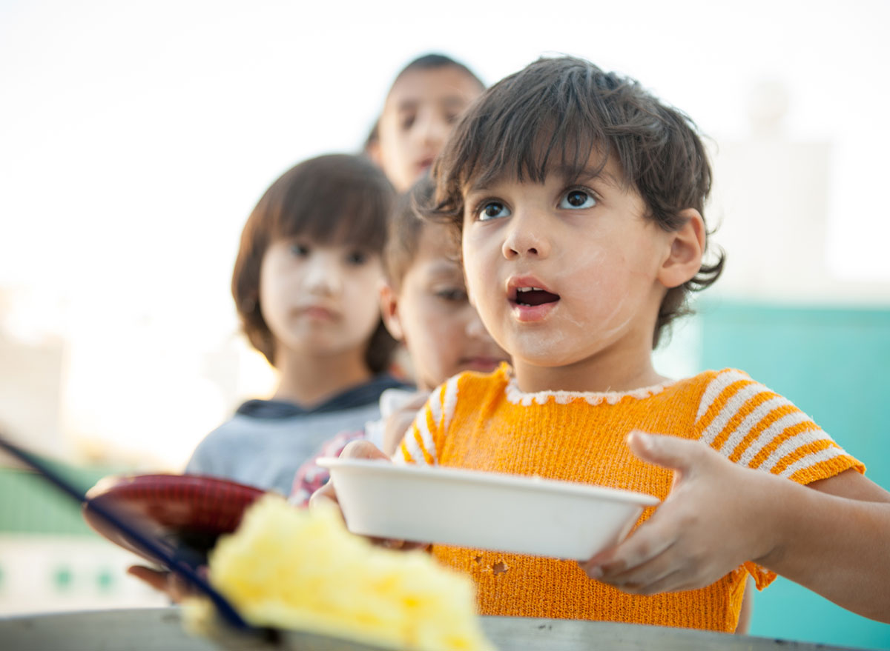
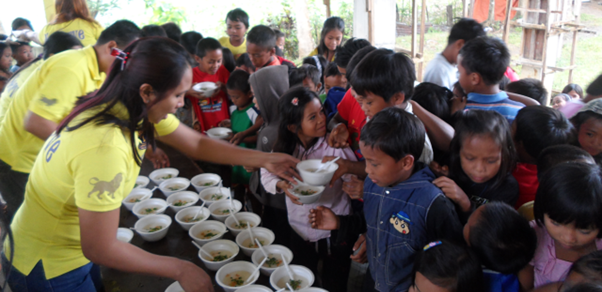

Goal 2 is about creating a world free of hunger by 2030.The global issue of hunger and food insecurity has shown an alarming increase since 2015, a trend exacerbated by a combination of factors including the pandemic, conflict, climate change, and deepening inequalities. By 2022, approximately 735 million people or 9.2% of the worlds population found themselves in a state of chronic hunger a staggering rise compared to 2019. This data underscores the severity of the situation, revealing a growing crisis. In addition, an estimated 2.4 billion people faced moderate to severe food insecurity in 2022. This classification signifies their lack of access to sufficient nourishment. This number escalated by an alarming 391 million people compared to 2019.
SDG 2: Zero Hunger

Economic Disparities and Food Affordability
Economic challenges exacerbate food insecurity, particularly in low-income countries where about 71.5% of the population cannot afford a healthy diet. This situation is compounded by high domestic food prices and market disruptions that make nutritious food inaccessible to many45. The economic downturns following the COVID-19 pandemic have further stalled progress toward reducing hunger.
Armed Conflicts and Displacement
Ongoing conflicts contribute significantly to food insecurity by causing destruction, displacement of populations, and disruption of agricultural activities. In many regions, starvation is used as a weapon of war, violating the right to food and exacerbating humanitarian crises24. The interplay between conflict and hunger creates a vicious cycle that is difficult to break. Current projections suggest that if trends continue at their current pace...

Contributing Factors
The increase in hunger is driven by multiple factors, including the COVID-19 pandemic, ongoing conflicts, climate change, and rising inequalities. These elements have created a complex crisis that exacerbates food scarcity and elevates food prices, pushing many into food insecurity. In particular, regions such as Africa and South Asia are experiencing severe challenges, with many countries facing alarming or serious hunger levels.
Rising Hunger Statistics
By 2022, approximately 735 million people (9.2% of the global population) experienced chronic hunger, a significant increase from 2019. Additionally, around 2.4 billion people faced moderate to severe food insecurity, marking an alarming rise of 391 million since 2019. Projections indicate that over 600 million individuals may face hunger by 2030, underscoring the urgent need for action to achieve the Zero Hunger goal by that year...

Need for Comprehensive Solutions
Achieving Zero Hunger requires a multi-dimensional approach, emphasizing investments in agriculture, social protection, and sustainable food systems. Efforts must focus on improving access to nutritious food, especially for vulnerable populations like children. Individual actions, such as supporting local farmers and advocating for systemic changes in food policy, are crucial in addressing this humanitarian challenge effectively.
Investment in Infrastructure
Significant investments are needed in rural infrastructure to improve food distribution systems. This includes enhancing storage facilities and transportation networks to ensure food reaches markets efficiently Social protection measures should be implemented to support marginalized groups, including women and small-scale farmers. Training programs can help improve their agricultural practices and access to markets...